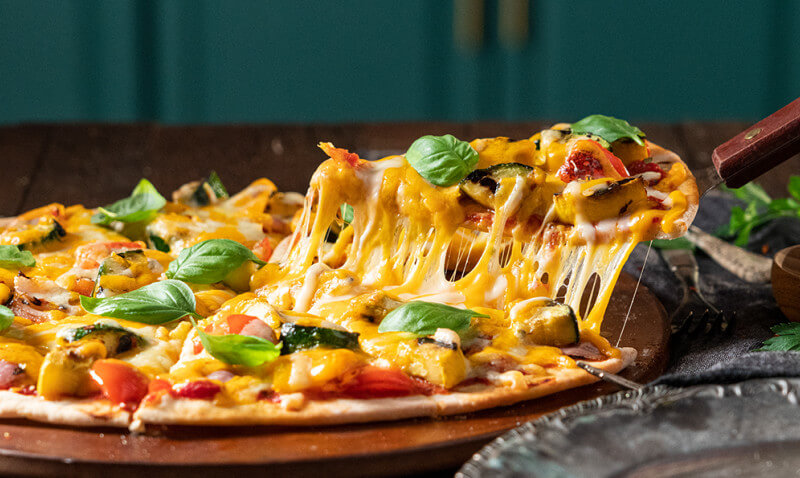

Vegetable Pizza
Home

Description
Vegetable Pizza is a popular Italian dish consisting of a crispy pizza base
topped with a rich tomato sauce, melted mozzarella cheese, and a variety of
fresh vegetables. It is loved for its combination of crunchy vegetables,
gooey cheese, and flavorful herbs baked to perfection.
Core Characteristics
-
The Base: A soft yet crispy pizza crust made from
wheat flour, yeast, water, olive oil, and salt serves as the foundation
of the pizza.
-
The Toppings: Vegetable pizza is loaded with colorful
vegetables such as bell peppers, onions, tomatoes, mushrooms, olives,
and sweet corn.
-
The Cheese & Herbs: A generous layer of mozzarella
cheese melts over the vegetables, while oregano, basil, and chili flakes
enhance the flavor.
Ingredients
- 1 Pizza Base
- 1/2 cup Pizza Sauce
- 1 cup Mozzarella Cheese, grated
- 1/2 Onion, sliced
- 1/2 Capsicum, sliced
- 1 small Tomato, sliced
- 1/4 cup Sweet Corn
- 1/4 cup Mushrooms, sliced
- 6–8 Black Olives, sliced
- 1 tsp Oregano
- 1 tsp Chili Flakes
- 1 tbsp Olive Oil
- Salt to taste
Steps
-
Preheat the oven to 220°C (425°F) and lightly grease a baking tray or
pizza pan.
-
Place the pizza base on the tray and spread the pizza sauce evenly over
the surface, leaving a small border around the edges.
-
Sprinkle half of the mozzarella cheese over the sauce.
-
Arrange the onion, capsicum, tomato, sweet corn, mushrooms, and olives
evenly across the pizza.
-
Top the vegetables with the remaining mozzarella cheese.
-
Drizzle a small amount of olive oil over the toppings and season with a
pinch of salt.
-
Bake the pizza in the preheated oven for 12–15 minutes, or until the
cheese is melted and bubbly and the crust turns golden brown.
-
Remove the pizza from the oven and allow it to cool for 2–3 minutes.
-
Sprinkle oregano and chili flakes over the pizza according to your
preference.
-
Slice into wedges and serve hot.